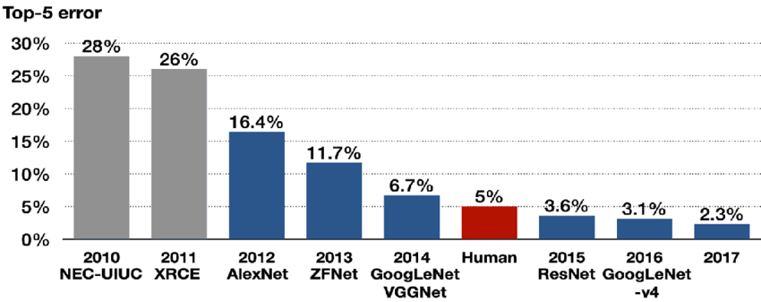
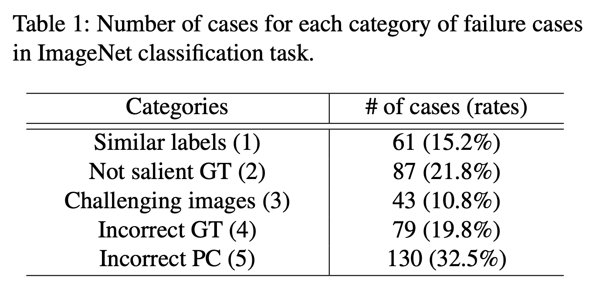
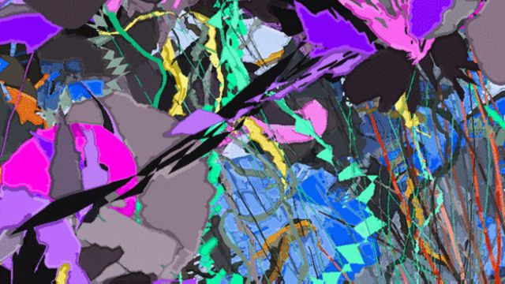
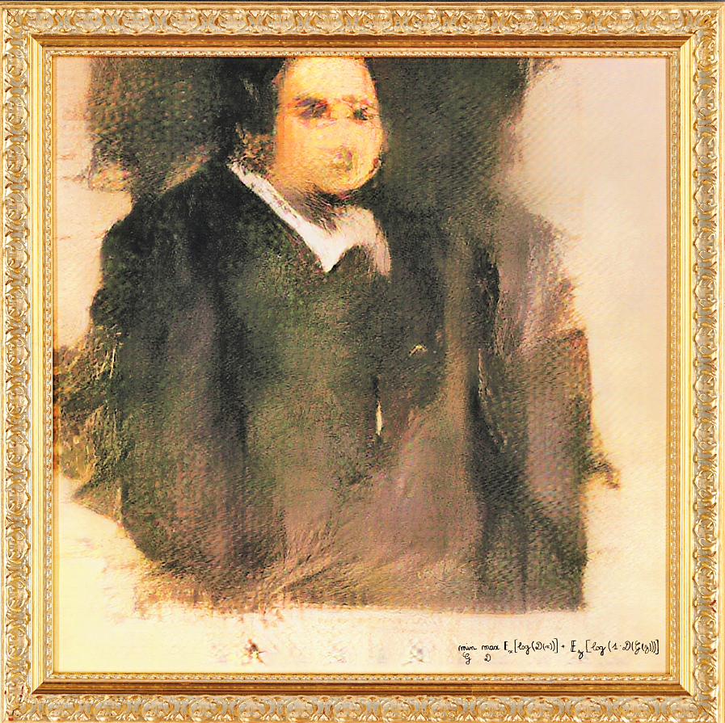
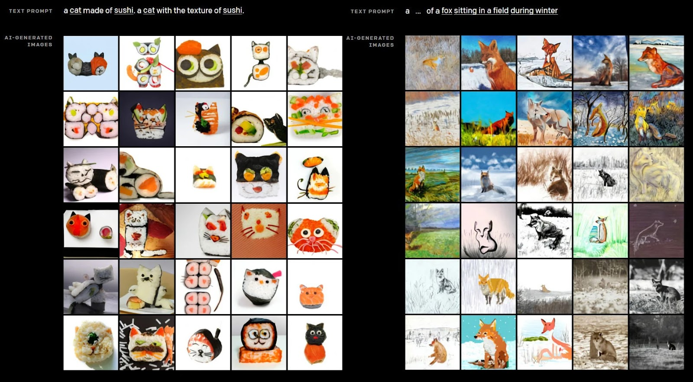
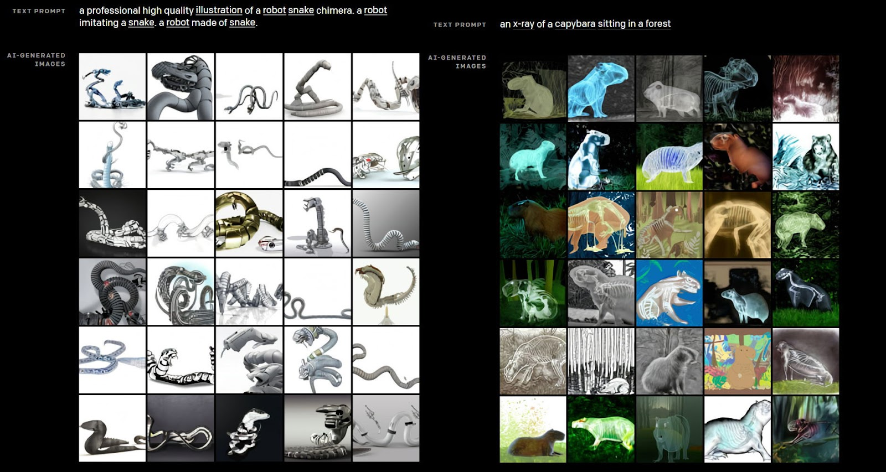

Introduction
This project was inspired by a prompt from the AI Impacts project:
For intellectual skills where machines have surpassed humans, find out how long it took to go from the worst performance to average human skill, and from average human skill to superhuman skill.
I initially tried to answer this question for several task areas. But over the course of this project, I pivoted more towards analyzing the advantages and disadvantages computer programs have over humans in each task, including the sources of error. I made this pivot mostly for practical reasons. For some tasks, machine programs are only tested against expert human performance, making them difficult to compare to “beginner” and “average” humans. In other tasks, the differences between human and machine performance are qualitative rather than quantitative. It seemed most appropriate to describe how machines and humans differ in performance rather than quantify it. I used this information to predict whether AI will replace or augment humans in performing these task areas.
I picked five task areas, each representing different aspects of human cognition:
- Poker-playing (strategy and interdependent decision-making)
- Image classification (a key subset of vision and perception)
- Text-summarization (interpreting and manipulating text)
- Creating static visual art (aesthetics and ingenuity)
- Human-like dexterity (manipulating physical objects)
Here is a summary of my conclusions:
| Task | Current capabilities |
| Poker | Superhuman (consistently) |
| Image classification | Superhuman (usually) |
| Text-summarization | Average human (unreliable) |
| Static visual art | Superhuman (but requires human input) |
| Human-like dexterity | Below humans (except specific tasks) |
See "Discussion / Personal Predictions" section for my predictions in how AI will machines will replace or augment humans in these tasks.
Task 1: Poker
Poker-playing is a strong case study for many aspects of human decision-making. Most significantly, it involves strategic decision-making against an opponent. Strong poker players use betting strategies, each having different consequences, which correspond to risk management and strategy broadly. Unlike chess and checkers, poker requires deciding under imperfect knowledge since you never know your opponent’s current hand. You must interpret your opponent’s bets despite never being certain what cards they hold. It involves identifying and exploiting your opponent’s patterns – a form of agent modeling. It involves deception through bluffing and switching between strategies. Playing against an opponent who attempts to deceive you involves acting under unreliable information. Machines encounter each of these challenges when playing poker against humans.
The first serious attempt at a “Poker bot” was Michael Caro’s ORAC, which played both limit and no-limit Texas Hold 'Em. ORAC reportedly “rolled over professional-level opponents in private tests in 1983 and even won most of its matches against [Michael Caro].” Yet at the 1984 World Series of Poker, ORAC showed mixed results against world champion humans, mostly losing. It is difficult to conclude how ORAC would play against other humans, as its performance was never officially documented. ORAC appears to be better than a first-time human poker player but worse than top professionals.
The next notable poker program was Loki, created by the University of Alberta in 1997 to play multiple-player Limit Hold’em. Loki betted by counting the potential hands that were better than, worse than, and equal to Loki’s hand. It then estimated the probability its hand was the best one generated. It did not perform opponent modeling – storing information about opponents’ previous betting decisions to analyze its strategy and exploit patterns. It simply assumed the opponent would always make the best decision for its current hand. This allowed Loki to play “better than average,” yet not at a world-class level.
Later versions of Loki were improved through a neural network trained on real poker tournament data. They were equipped with basic opponent modeling, although it ignored much of the relevant context for simplicity. It couldn’t model an opponent who varied their strategy throughout the game. Loki’s developers underscored the importance of opponent modeling in future algorithms.
In 2002, the University of Alberta developed PsOpti to play Limit Hold’em. The algorithm was designed to approximate the game-theoretic optimal strategy (i.e. optimized for not losing, not for winning). It assumed the opponent was also playing optimally rather than with a bias or alternative strategy. While playing against humans, PsOpti showed mixed results. Most human players struggled to adjust to the program’s playing style. It often made plays that human players would consider unconventional, resulting in a “cloud of confusion” that gave PsOpti an advantage. When Gautam Rao played against the program, he won by exploiting the fact that it lacked opponent modeling. The researchers concluded that “opponent modeling will almost certainly be necessary to produce a program that surpasses all human players.”
In 2006, Carnegie Mellon researchers developed GS1, a Limit Hold’em program that analyzed the structure of the game tree and automatically generated various strategies. Unlike other bots, GS1 used little poker-specific knowledge or expert-designed abstractions for its strategy. It performed competitively against two other programs (PsOpti and Vexbot). It was also competitive against humans but lost on average by just 0.02 bets per hand. Again, the program’s performance was limited by its lack of opponent modeling.
In 2007, the University of Alberta developed Polaris, a program for playing both limit and no-limit Texas Hold 'Em. Polaris used counterfactual regret minimization (CFR) against abstract poker games. CFR—now considered a core framework for solving large imperfect-information games—works by iteratively traversing the game tree and computing the amount of “regret” for each action at each decision point. “Regret” refers to how much better the program would have done had it pursued one action over another.
Polaris’s strategy was relatively fixed and could only be adjusted by “tilting” (or modifying) the payoff function. It did not contain opponent modeling; it consisted of several poker strategies, each corresponding to a solution to a specific “tilt.” After each hand, the program computed the relative performance of each strategy, then determined the best strategy based on the payoff function. Polaris would converge to the optimal strategy after playing a few hands. It showed strong performance against humans, narrowly losing against two professionals but beating a team of six. This made Polaris the first program that “statistically defeated a group of human professionals.” While Polaris lacked full opponent modeling, its ability to converge to the optimal strategy for a given opponent proved effective.
In January 2015, the University of Alberta developed Cepheus, an “unbeatable” computer program for Limit Hold ‘Em. Cepheus used CFRᐩ, a variant of counterfactual regret minimization that iterates over the entire game tree and requires less computation. While developing its strategy, it also learned to use bluffing. Cepheus became the first program to “solve” an imperfect information game.
That same year, Carnegie Mellon researchers developed Claudico to compete against professional players in No-Limit Hold ‘Em. Most previous poker-playing programs had been designed for Limit Hold ‘Em, which is less computationally complex and involves different strategies. Claudico functioned by inputting the rules of poker and computing increasingly-precise approximations of the game-theory-optimal strategy as an output. It played well against the humans and finished with a statistical tie, although the human professionals earned more chips. It occasionally made unusual bets such as betting $19,000 to win a $700 pot.
The successor to Claudico was Libratus, developed by Carnegie Mellon in 2017. It used CFRᐩ combined with a new technique for endgame solving – the process of computing a better strategy for just an endgame than what can be computed for the entire game. During a competition against four professional players, Libratus won by a high margin. One player commented, “I felt like I was playing against someone who was cheating, like it could see my cards… It was just that good.”
In 2019, Carnegie Mellon and Facebook's Pluribus “decisively” beat human professionals in six-player no-limit Hold 'em, the most widely played poker format in the world. Unlike previous AI programs, Pluribus played against more than two people, hence it could not rely on a Nash equilibrium strategy. It used a limited-lookahead strategy, computing possible plays in response to the opponents’ strategy several moves ahead of the current one. Pluribus made deliberately unpredictable decisions and varied its behaviors to confuse the opponent. It was also far more computationally efficient than previous poker machines.
Poker-playing algorithms were almost exclusively tested against professional human players and other poker-playing algorithms. This makes it difficult to compare their performance to low- and average-skill human performance. However, it took from CARO in 1983 to Loki in 1997 to go from first major attempt to “better than average” in Limit Hold ‘Em. Since then, several advancements occurred – including opponent modeling, improved game-theoretic optimization, CFR, and the ability to bluff and change strategies. In 2015, Cepheus became the first unbeatable Limit Hold ‘Em program, meaning it took 18 years to go from “better than average” to superhuman performance.
Below is a chart depicting the time for AI to cross human-relative ranges in Limit Hold ‘Em (based on this template):
| Limit Hold ‘Em | |||
| Range | Start | End | Duration (years) |
| First attempt to above-average | <1983 | 1997 | >14 |
| Above-average to superhuman | 1997 | 2015 | 18 |
Task 2: Image classification
A foundational task in computer vision is image classification, or assigning semantic labels to images to reflect their visual content. With the amount of image data growing rapidly, AI is and will continue to help us process this information. Early approaches used hand-crafted feature descriptors that identify specific features (e.g. shape, color, texture). While they offered promising results, these attempts couldn’t detect and describe higher-level concepts. More recent programs have become exceptionally good at image tagging, seeming to approach a 0% error rate.
Beginning in 2010, algorithms had been evaluated in image classification in the annual ImageNet Large Scale Visual Recognition Challenge. To classify images, the software must identify objects in the images and correctly select the most accurate categories of 1,000 options. The winner, NEC Labs America and UIUC, achieved an error rate of 28%. The classification error rate for humans in the ImageNet dataset was reported to be 5.1%. Future attempts at this type of image classification will be described below.
Another major comparison between humans and AI in image classification came from Andrej Karpathy in 2011. He compared his performance to the state-of-the-art program at the time. The program analyzed a pool of 50,000 images, then placed them into one of 10 categories (e.g. "dogs," "horses," "trucks"). It applied several learning algorithms such as sparse auto-encoders, K-means clustering, and Gaussian mixtures using only single-layer networks. It found that K-means clustering yielded the most accurate results with about 80% accuracy. Researchers were surprised it performed as well as it did, expecting it to perform worse due to its simplicity. When Andrej Karpathy tried the same task manually, he scored 94% accuracy.
Another 2011 program demonstrated that machines were far behind humans in image classification. The program consisted of two modules: a hand-designed feature extractor (which computed numerical properties of the image data to discriminate between two categories) and an Adaptive Boosting machine learning algorithm. The program’s error rate fluctuated widely depending on the problem and amount of training. But overall, it consistently performed far worse than humans. When humans and the program were trained on the same amount of data, humans had an average error rate of 13.7% while the program had a 50% error rate.
The greatest source of error came from the algorithm’s inability to analyze information about the overall image geometry. The program could only learn from statistical local measurements; it had no sense of symmetry, alignment, proximity, inclusion, or collinearity. It could not perform abstract reasoning about the arrangements of shapes. Hence, humans performed far better in categorizing images.
Later in 2011, Google researchers created a deep learning model that accurately identified images with human faces 81.7% of the time, human body parts 76.7% of the time, and cats 74.8% of the time. Unlike previous algorithms, this one was not programmed to identify specific features. This made it one of the earliest breakthroughs in unsupervised learning. The feature detector was robust against translation, scaling, and out-of-plane rotation. The researchers concluded that neural networks could achieve low error rates in classification when given enough training data. (It is now widely known that modern deep learning requires a lot of training data.)
In 2011 and beyond, researchers continued competing in the ImageNet challenge (mentioned above). XRCE won in 2011 with a 26% error rate, and AlexNet won in 2012 at 16.4%. The paper that introduced AlexNet is considered one of the most influential publications in the field of deep convolutional networks. It concluded that deeper models can achieve higher performance but require more computational power, which became possible as GPUs improved. The first system to beat humans in image classification came from Microsoft in February 2015 achieving a 4.94% error rate. In December 2015, Microsoft beat its previous record with a 3.6% error rate. The ImageNet challenge winner error rates each year are depicted here:
The researchers whose algorithm surpassed human performance in February 2015 compared their program’s errors to human errors. They argued that most human errors come from fine-grained recognition, or differentiating between hard-to-distinguish object classes such as dog species. Human errors also come from class unawareness – failing to consider a relevant class due to not knowing it exists. In contrast, the algorithm’s errors occurred in cases requiring abstract understanding or contextual knowledge related to the image (e.g. a spotlight).
The researchers whose model achieved a 3.3% error rate in the 2016 ImageNet challenge also described the sources of error. They determined that the top five errors were distributed as follows:
“Similar labels” refers to cases where the predicted labels (e.g. "monitor") refer to similar content as the ground truths (e.g. "desktop computer"). These errors could be considered an evaluation error rather than a failure of the algorithm. “Not salient GT” occurs when the ground truth is not salient in the image, hence the predicted class may or may not be incorrect. This could also be mitigated by changing the evaluation policy to allow multiple ground truths. “Challenging images” refers to images that humans would struggle to classify. Interestingly, this was the least common error among those identified. “Incorrect GT” refers to cases where the ground truth is simply incorrect. (Researchers have found that around 6% of labels in the ImageNet dataset are incorrect.) “Incorrect PC,” the most common error identified, simply means the algorithm failed to generate the correct predicted class. Most errors in this category occurred in images with irregular distributions such as light distortion or motion blur. Such errors may be avoidable by including more of these irregular images in the training data. Challenging images and incorrect PC—which comprised 43% of the algorithm’s errors—were the only two categories in which the algorithm was truly “responsible” for the mislabeling.
Compared to humans, AI programs are better at processing vast amounts of image data quickly, and in most cases, more accurately. However, machines can unexpectedly fail at identifying images when contextual knowledge or understanding of a nuanced relationship is required. AI programs may stumble at distinguishing between a man and a statue of a man, or at identifying an object from an occluded image.
In the ImageNet challenge, it took three years to go from the first attempt in 2010 to beginner level – around 2x the human error rate. It took another two years to reach average human performance in 2015. Two years later, a program achieved superhuman performance at half the error rate of humans.
| Image classification (ImageNet) | |||
| Range | Start | End | Duration (years) |
| First attempt to beginner | 2010 | 2013 | 3 |
| Beginner to average | 2013 | 2015 | 2 |
| Average to superhuman | 2015 | 2017 | 2 |
Task 3: Text-summarization
Text-summarization is a key subset of natural language processing. There are two main types: extractive summarization (extracting the most important content from the input text without modifying it) and abstractive summarization (generating new phrases and representations that are closer to what a human might write). While the field of extractive summarization is considered mature, abstractive summarization is still largely unsolved.
Early attempts to summarize texts relied on statistical methods to rank words and sentences. In 1958, IBM developed an extractive summarization method using an IBM 704 data-processing machine. It computed word frequencies and distributions for technical papers, then determined the relative significance of individual words and sentences. The highest-ranking sentences were outputted as an “auto-abstract” summary. The auto abstracts lacked the sophistication of human-generated abstracts, but they were reliable and uniform.
In 1969, H. P. Edmundson proposed a new method for producing text extracts. Previous methods had relied primarily on the frequency of words to determine their importance. Edmundson’s method also considered cue words (an inputted list of at most 1000 words), titles and headings, and sentence location. On average, 44% of sentences extracted by the algorithm matched sentences extracted by humans. The study emphasized two limitations of the method: redundancy and the lack of linguistic complexity (i.e. inability to factor in figures, tables, phrases, clauses, footnotes, etc.). The issue of redundancy was addressed by Hongyan Jing of the Association for Computational Linguistics in 2000.
In 1995, researchers from the Xerox Palo Alto Research Center developed a trainable program for producing document extracts. It involved feature detectors using a naive-Bayes classifier to discount short sentences, place a higher weight on high-frequency words and sentences with fixed phrases (eg. "in conclusion…," "in summary"), detect uppercase words, and more. The program performed well: on average, it selected 84% of the sentences chosen by professionals. The main issue described was the generalizability of the method, as the document being summarized needed the title, text, and abstract to be in a specific order.
In 2005, S.P. Yong developed a summarization method using text pre-processing, keyword extraction, and summary production. It performed pre-processing by removing stop words (e.g. "the," "a," "can.") and stemming (removing suffixes and prefixes). It performed keyword extraction using a competitive neural network that took a word frequency function as an input. Summary production translated the neural network output into words, then selected sentences containing those words from the document. The method performed with a “contents score” of 83.03% and produced “a fairly good summary” that “extract[ed] the most important contents.” His paper demonstrated that extractive summarization could be performed with main steps: pre-processing, keyword extraction, and summary production.
In 2010, Li Chengcheng of Inner Mongolia Normal University developed an extractive summarization method based on Rhetorical Structure Theory (RST) – a framework that analyzes text structure at the clause level. The program generated complete, accurate, and readable summaries. Its weaknesses included the lack of discourse-structural analysis, inability to handle documents with varied subjects (e.g. a magazine), and inefficiency of analyzing each sentence at several levels.
In 2015, research into text-summarization increased significantly. In 2016, Bina Nusantara University researchers used Term Frequency-Inverse Document Frequency (TF-IDF) scoring to summarize documents. The TD-IF value of a particular word is greater when it appears frequently in the document. To account for how some words appear more frequently regardless of the topic, TD-IF values are lower when many other documents in the corpus (inputted collection of documents) contain the word. The TF-IDF-based program yielded summaries with 67% accuracy. The researchers attributed the inaccuracies to limited sample sizes and the lack of extra weighting for words appearing in the title. Over the next few years, the field of extractive summarization was considered to be reaching maturity.
In November 2017, Salesforce developed a neural network model for abstractive text summarization by combining supervised word prediction with reinforcement learning. It used a similar encoder-decoder mechanism as previous programs but was able to avoid redundancy and generate summaries of different lengths. The algorithm was not “as good as a person,” but was “dramatically better than anything developed previously” in abstractive summarization. The most common issue was short and truncated sentences towards the end of the text.
In December 2019, Google’s PEGASUS abstractive summarizer reached human-level performance in generating text summaries. The program, which removed entire sentences from the texts and tasked the model with recovering them, utilized pre-training with self-supervised objectives. PEGASUS achieved human-level performance on a variety of document types using relatively little training data. It consistently generated grammatically and syntactically correct summaries. However, some have reported that PEGASUS occasionally produces inaccurate or misleading information.
The challenges in automatic text-summarization evolved as the methods did. Extraction-based programs were limited by the original input text, as they could not generate new sentences. They lacked linguistic sophistication and smooth transitions between different ideas. They sometimes contained redundancy and were overall less readable and cohesive. The field of abstractive summarization is relatively new and still suffers from producing factually inconsistent summaries. Current techniques seem to “understand” grammar and syntax, not the factual content. According to a 2019 study, 8-30% of abstractive summaries (by different systems) are factually inconsistent with respect to the source document. Hence, I’d argue AI is currently at average-level human performance in abstractive text-summarization.
| Text-summarization | |||
| Range | Start | End | Duration (years) |
| First attempt to beginner (extractive) | <1958 | 2005 | >47 |
| Beginner (extractive) to average (abstractive) | 2005 | 2019 | 14 |
Task 4: Creating static visual art
Some consider creativity to be “the ultimate moonshot for artificial intelligence.” One way to test AI creativity is having them create artistic images. Current AI methods seem capable of creating art, but require human intervention.
In 1973, artist Harold Cohen developed AARON, a computer program that creates artistic images. He began developing a simple version of AARON in C, then switched to Lisp and added new features over time. Each style and capability of the program was hand-coded. Yet it could generate an infinite number of unique, aesthetically pleasing drawings. It also drew with the irregularity of a freehanded human. Because features were hard-coded, Cohen argued AARON was not “creative” but also posed the question, “If what AARON is making is not art, what is it exactly?” Below are examples of AARON’s works:

The next major event in AI-generated visual art was the advent of Generative Adversarial Networks (GANs) in 2014. Introduced by Ian Goodfellow and his colleagues, GANs are a framework for using deep learning methods for generative modeling. They contain two elements: a generator (creates new images) and a discriminator (tries to identify which images are computer-generated). If the generator successfully “tricks” the discriminator, that image is outputted by the GAN. Several artists—including Helena Sarin, Anna Ridler, and Memo Akten—have used GANs over the years to create art. Below is Portrait of Edmond de Belamy (2018), a painting created using a GAN that sold for $432,500 at an auction:
One limitation of GANs is that they require several human interventions. The human must select the training data, design the network, train the network, and process the outputs. This “raises questions about where the ‘artist’ resides within the production of AI art.” These critiques were addressed in 2017 by Creative Adversarial Networks (CANs) – modified GANs that maximize deviation from established styles while minimizing deviation from art distribution. During experiments, humans could not distinguish CAN-generated art from human-generated art. The program, called AICAN, claims to be "the first machine generated artist to pass the Turing test."
In 2015, Google released DeepDream, a computer vision program for manipulating images through “algorithmic pareidolia.” It used a convolutional neural network to modify patterns in images and create a dream-like psychedelic appearance. Users could input an image and specify the style they want to emphasize, for example, to make it appear more “cat-like.” It is limited by requiring an inputted image and only being able to generate a specific style of art.
In 2021, OpenAI revealed DALL-E, a program that generated images from text prompts. It used a version of GPT-3 to interpret and create images from natural language inputs. It could create both realistic images and objects that don’t exist in reality. Occasionally, DALL-E fails by creating images that were unexpected or intended to look different. It is difficult to pinpoint why these errors occur given the “black box” nature of GPT-3 and the lack of open-source code. Below are examples of how DALL-E generates images from text prompts:
The shortcomings of visual art programs vary widely. Early models had limited “creativity” and required hard-coded styles. GAN-based programs offered wider artistic capability but still involved human input. Recent deep learning-based programs offer wider creative abilities but occasionally fail unexplainably. Throughout this entire history, computers have never been able to determine which content is beautiful or eye-catching to the human eye. According to artist and computer scientist William Latham, “you can’t completely remove the artist or the public from the artwork.” Because there are no real examples of art created exclusively by AI, it is difficult to compare AI versus human performance.
| Generating static visual art | |||
| Range | Start | End | Duration (years) |
| First attempt to above average (GANs) | <1973 | 2014 | >41 |
| Above average (GANs) to superhuman (DALL-E) | 2014 | 2021 | 7 |
Task 5: Human-like dexterity
Digitally operated and programmable robots have been around since the 1950s. But only recently have robots attempted to replicate human-like dexterity in manipulating physical objects. There’s been significant progress in repetitive, precise tasks, but otherwise machines are far behind humans.
In 1972, Waseda University developed WABOT-1, the world’s first full-scale intelligent humanoid robot. It had a limb control system that enabled walking, hands and tactile sensors for gripping and moving objects, a vision system, and various other sensors. WABOT-1 had limited abilities in all areas and was estimated to have the mental faculty of a one-and-a-half-year-old child. Walking one step took around 45 seconds. WABOT-2, revealed in 1984, had five-fingered hands capable of performing precise movements such as playing an electronic keyboard.
Throughout the 1970s, several robotic arms were developed including FAMULUS (1973), The Silver Arm (1974), and SCARA (1978). These robots could assemble cars, small parts, and electronics, but were not designed to mimic human dexterity.
In 2000, Honda released ASIMO, which could run, walk, and interact with its environment. Its multi-fingered hands contained a tactile sensor and a force sensor on the palm and each finger. This allowed each finger to act independently and with more dexterity. It could perform tasks such as lifting a bottle and twisting off the cap, holding a soft paper cup (without squishing it) to pour a liquid, and making sign language expressions.
From 2001 to 2005, Fujitsu released three robots in its HOAP series. Relying on neural networks, these miniature robots could perform tasks such as sumo movements, cleaning a whiteboard, and grasping thin objects.
Beginning in 2005, TOSY developed TOPIO, a humanoid robot for playing table tennis. It used deep learning to continuously improve its performance. Over time, TOSY also developed new models with greater degrees of freedom and more advanced motors.
In 2008, the Institute of Robotics and Mechatronics at DLR introduced Justin, an autonomous and programmable humanoid robot. It was designed for sensitive physical manipulation including household work and assisting astronauts in space. Justin's multiple actuated degrees of freedom allowed it to complete several tasks at once under a "task hierarchy." For example, it could "serve beverages while observing the environment, moving without singularity, avoiding collisions, compliantly responding to collisions with the environment – all without spilling the drinks." Early versions of Justin could perform tasks such as grasping objects handed by humans, pouring liquid, and unscrewing a bottle cap. Later versions could skim bread crumbs off a table, collect shards of a broken bug using a broom, make coffee without splashing liquid, and throw a ball. It could also catch flying objects with an 80 percent success rate using cameras, tracking software, and precision grasping.
In 2012, Rethink Robotics introduced Baxter, a robot for handling simple industrial tasks. Such tasks included packing and unpacking boxes, assembling plastic parts into place, welding and stamping machines, putting caps on jars, and performing inspections to remove defective items. Its arms were compliant: rather than being rigid, they could sense obstacles and adapt to them. Baxter was limited by requiring task-level programming from humans, being less fast and precise than other industrial robots, and being unable to lift heavy objects.
In 2013, Boston Dynamics announced Atlas, a bipedal humanoid robot. It was particularly skilled at walking over rough terrain and performing gymnastics (backflips, cartwheels, handstands, somersaults, etc.). In a 2015 demonstration, it completed tasks such as removing debris from an entryway, opening a door and entering a building, using a tool to break through a concrete panel, and operating a fire hose. While impressive, Atlas required training from humans and may not perform as well in an uncontrolled or unfamiliar environment.
In 2015, Moley Robotics developed a robotic chef that could cook over 5,000 recipes. Attached to rails on the ceiling, the “R-Kitchen” used two robotic arms and hands with tactile sensors. It was programmed to copy the exact movements of a human chef. A human chef would cook while tracked by sensors, which provided data to be translated into digital movements by programmers. R-Kitchen could prepare any meal that was on its recipe list with precision. It performed relatively quickly; it took five minutes to make a gourmet pizza from scratch.
In 2015, UC Berkeley developed BRETT, a robot that used deep learning to perform tasks such as assembling a toy airplane, solving a puzzle, screwing a cap on a bottle, and putting a clothes hanger on a rock. The robot learns by experimenting with tasks like a child, with a reward function providing a score based on how well it’s doing.
In 2016, UC Berkeley researchers developed DexNet, which was reportedly more dexterous than any robot created prior. It used a robotic manipulator with a Grasp Quality Convolutional Neural Network to learn how to grasp objects. It trained itself to grab objects in a virtual environment through trial and error. It could generalize to objects it hadn’t seen before and learn how to grasp them on the fly.
In 2018, OpenAI developed Dactyl, a human-like robot hand to manipulate physical objects. It was fully trained via simulation using a general-purpose reinforcement learning algorithm. Dactyl was able to manipulate blocks and solve a Rubik’s cube with one hand. This was done without developers programming specific motions. It automatically discovered techniques such as sliding, finger pivoting, and finger gaiting in the virtual simulation, then transferred those techniques to real-world physical manipulation. Although Dactyl had touch sensors, it didn't need to use them, demonstrating that tactile sensing isn't necessary for physical manipulation. Dactyl was also robust to perturbations and could generalize to other objects with similar properties.
In 2019, UC Berkeley developed Blue, a low-cost robot similar to the human arm. It was trained using reinforcement learning and could perform tasks such as tying knots, handling screws, folding laundry, and operating a Nespresso machine. It was designed to be safe around humans; unlike most industrial robots, which are like a brick wall when pushed, Blue could be jostled and would move aside “like a human in a crowded subway.” It could relax its arm to be compliant or tense up and become rigid. However, this flexibility meant less precision in its performance.
Since then, other groups have attempted to emulate human dexterity in limited applications. In 2019, NVIDIA's AI Robotics Research Lab developed kitchen robots designed for collaboration with humans. That same year, Tangible Research developed dexterous robotic hands, although they were haptic-controlled. In 2020, Dexterity AI created robots for automating physical tasks, primarily for repetitive logistics and warehouse tasks.
Overall, machines are still far behind humans at dexterity and manipulating physical objects. Many programs require extensive human training, programming, or direct control. Most robots only perform only a small subset of the tasks humans are capable of. Programs with wider capabilities are typically far slower than humans. For now, the best use case for robotics is repetitive tasks such as factory operations or cooking.
| Human-like dexterity | |||
| Range | Start | End | Duration (years) |
| First attempt to beginner | <1972 | Unknown | Unknown |
Conclusion
The levels of machine performance relative to humans vary widely depending on the task. In poker, machines are better than the most-skilled humans. Starting with basic probabilistic models, algorithms improved over time through opponent modeling, game-theoretic approximations, neural networks, CFR, and other developments. AI has several qualitative advantages over humans in poker. Unlike humans, AI also does not get fatigued after many rounds or become flustered after a losing streak. It also doesn’t "feel" the value of money. Whereas humans experience loss aversion, AI tends towards the game theory optimal play.
Algorithms have also surpassed human performance in image classification. Early techniques were simplistic and could not analyze certain features or patterns. Over time, deep learning systems have become increasingly good at classifying and have approached near-0% error rates asymptotically. Much of the recent errors on the ImageNet challenge can be fixed through more training data or better evaluation methods. Currently, the main shortcomings of AI image classifiers are identifying complex relationships (e.g. a statue of a man on a horse), analyzing occluded images, and dealing with adversarial examples. How frequent these issues arise and the potential for overcoming them is unclear.
For text summarization, algorithms have not quite reached human-level performance. The field of extractive summarization has been heavily researched since 1958 and is considered to have reached maturity. Extractive summarizers can now produce high-quality summaries with minimal redundancy. The focus has since shifted to abstractive summarization, which produces more human-like summaries. While models such as PEGASUS can consistently generate grammatically and syntactically accurate summaries, they occasionally output false or misleading information.
It is difficult to characterize AI performance in generating static visual art, as programs still require human intervention. AI began as an impersonator, not a creator. More recent programs could replicate and blend different styles of artwork and generate realistic images. Arguably, AI can now produce art but can’t create it. It can emulate tactical skills, yet it lacks human taste. AI has no sense of which artwork would be considered interesting or inspiring.
Machines are far behind human performance at dexterity and physical manipulation. Even the most recent innovations in robotics either require human control/intervention or perform only a small range of tasks. Some of the programs that “learn” by experimenting have demonstrated wider capabilities, although their performance may diminish when moving from a controlled testing environment to the real world.
Discussion / Personal Predictions
Current AI progress in the five chosen tasks may indicate how humans will interact with AI in the future. Progress in poker-playing demonstrates that AI can outperform humans in strategy, even with imperfect or unreliable information. AI can also bluff, run game theory approximations, and change strategies. One might extrapolate from these results and conclude that AI will replace humans in strategic decision-making. Yet I’d argue this will take time for two reasons. First, poker games are discrete, whereas real-world games are often continuous or difficult to model algorithmically. Second, humans may be hesitant to yield strategic decisions to AI – particularly political, financial, or business decisions. In the near term, I predict that AI will augment humans in making strategic decisions by providing the possible outcomes of various paths. Whether humans allow AI to make the final decision will depend on the risks associated.
In image classification, I predict that AI programs will continue to approach a 0% error rate asymptotically until the errors become negligible. Mass image classification has many applications such as object identification in satellite images, traffic control, medical imaging, image organization, visual search, and facial recognition. I predict that AI will replace the role of humans in these tasks, except in the creation of training datasets.
Given recent advances in abstractive summarization, AI could augment humans in summarizing texts. Current algorithms occasionally generate summaries with factual information that’s inconsistent with the source document. However, there have been many promising efforts (including Microsoft’s SpanFact and a solution from Amazon) to generate factually correct abstractive summaries. As these systems are integrated with other strong abstractive summarization techniques, I predict AI will obviate the need for humans in this task. Humans would only be required when specific styles or formats of summarization are desired.
I chose to research the task of text summarization because I believed it could serve as a proxy for many other tasks in natural language processing. However, I later realized that there are several challenges in NLP that aren’t necessarily present in these text summarization tasks. Such issues include irony/sarcasm, ambiguity, colloquialisms, and language differences. Because of these issues, the results from text-summarization may not generalize easily to other NLP tasks such as sentiment analysis and conversational agents.
Based on AI’s progress in generating artistic images, I predict that AI will augment artists in their work. It is currently impossible to define “creativity” into a set of rules – perhaps by definition, or possibly due to limited research as to how and why humans are creative. AI could be used as a tool for creators to experiment with and enhance their work. AI may also open a new type of art, similar to how cameras led photography to become recognized as an art genre.
Of the five tasks, AI is the furthest away from outperforming humans in manipulating physical objects with human-like dexterity. Current robots seem best-suited towards repetitive tasks or tasks that require precision. But given recent advancements, I predict that machines will perform increasingly dynamic and complex tasks in areas such as manufacturing, surgery, and farming. Such developments will likely be targeted towards specialized cases where high volume and scale are required. This is supported by both the current trajectory of AI developments and the demand for offloading mundane tasks from humans.
Here is a summary of my personal predictions:
| Personal predictions | |
| Task | Overall, AI will {augment/replace} humans. |
| Poker | Both |
| Image classification | Replace |
| Text-summarization | Replace |
| Static visual art | Augment |
| Human-like dexterity | Both |
If you have feedback or disagree with any of my predictions, please let me know in the comments!